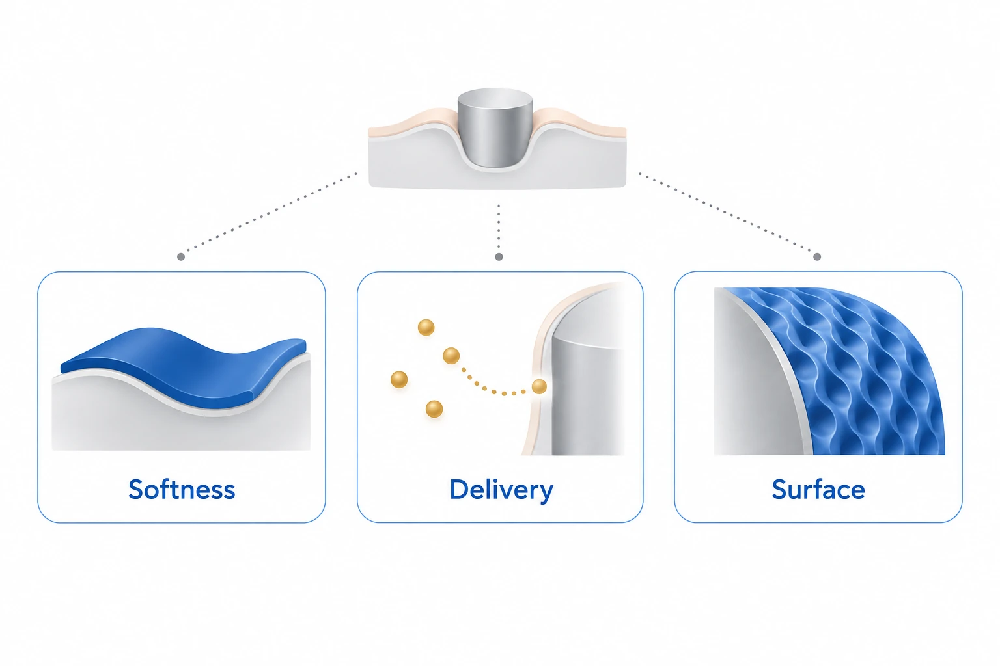

Research context and placement
The abstract directly categorizes foreign-body-response mitigation through softness, drugs and biomimetic surfaces.
Research background
Protein/cell adhesion and encapsulation reduce sensitivity and longevity. The review cautions against transferring material safety between implant applications.
Approach and advances
Flexible probes require insertion stiffness; biodegradable reinforcement supplies temporary support before restoring compliance. Foreign-body responses can nevertheless persist.

AI-generated concept, abstract scope only, categorizing softness, drug delivery and biomimetic surfaces reviewed toward reducing foreign-body responses. Dots, boundaries and patterns are abstract symbols, not a specified drug, release port, biological template, efficacy result or combined device.
Approved only for the three strategy categories named in the abstract, excluding specific mechanisms or clinical efficacy represented by boundaries, particles or patterns.
This is not a reproduced paper figure and does not establish permission to reuse the original figure.
Generated in ChatGPT on the web from concepts verified in the public abstract and independently reviewed within that abstract-only scope. This does not claim verification of the main text or supplements. Display processing is limited to WebP encoding, without cropping or content editing.
Evaluation and conditions
The reviewed DNNC–PEG-DA comparison examines macrophages and capsules at 7/30 days. These endpoints do not establish sustained device function.
Key findings
The review reports reduced fibroblast proliferation/COL1A1 after mTOR knockdown in vitro, without significant in-vivo capsule-thickness change. Original data were not reanalyzed.
Limits and open questions
Blood-contact TLP and heated-instrument LIS tests do not establish chronic implant protection; surface durability and in-vivo validation remain unresolved.
Related external research
Foreign body reaction to biomaterials
DOI: 10.1016/j.smim.2007.11.004 ↗
Macrophage fusion and surface properties supply a mechanistic framework for assessing #55’s intervention categories.
Mechanistic explanation and intervention efficacy are distinct.
Abstract checkedCorresponding-author verification
Jungmok Seo: corresponding authorThis record concerns Jungmok Seo’s correspondence designation. Author order or an asterisk alone is not treated as confirmation; this check is separate from verification of the research content.
- Correspondence evidence source ↗
Correspondence to Jungmok Seo
Author information → Corresponding author · publisher_correspondence_read
- Main-text review scope
- Read the official Springer HTML Introduction, foreign-body response, Materials and Mechanics, Drug Delivery, Biomimetic Surface and Conclusion, including their subsections. Read captions for Figures 1–4 and crosschecked identity/selected passages on PDF pages 1, 6, 7 and 11 (journal pages 48, 53, 54 and 58). Cited original experiments, raw data and all figure-panel values were not independently audited.
- Supplementary review scope
- No supplementary file was read. No separate SI link was identified on the inspected public page; this does not establish that no SI exists.
- Pending verification
- Cited originals still require checking for dose, sample size, implantation site, observation period, statistics and raw data. SI availability/content, long-term performance and safety, and cross-study rankings remain unverified. The review examples are not matched head-to-head tests or clinical validation.
COVERAGE & OUTREACH
Coverage and outreach
Links are checked for their relationship to this paper. Media publication does not establish independent reporting or additional experimental validation.
No related outreach link was verified against its body within these searches. This does not establish that none exists.
Channel coverage and search log for all 101 records →Sources and verification scope
Read the official Springer HTML Introduction, foreign-body response, Materials and Mechanics, Drug Delivery, Biomimetic Surface and Conclusion, including their subsections. Read captions for Figures 1–4 and crosschecked identity/selected passages on PDF pages 1, 6, 7 and 11 (journal pages 48, 53, 54 and 58). Cited original experiments, raw data and all figure-panel values were not independently audited. No supplementary file was read. No separate SI link was identified on the inspected public page; this does not establish that no SI exists.
The additional commentary is editorially approved within the stated evidence scope. This does not imply complete verification of all main-text and supplementary material.
- Additional main-text review scope
- Read the official Springer HTML Introduction, foreign-body response, Materials and Mechanics, Drug Delivery, Biomimetic Surface and Conclusion, including their subsections. Read captions for Figures 1–4 and crosschecked identity/selected passages on PDF pages 1, 6, 7 and 11 (journal pages 48, 53, 54 and 58). Cited original experiments, raw data and all figure-panel values were not independently audited.
- Additional supplementary review scope
- No supplementary file was read. No separate SI link was identified on the inspected public page; this does not establish that no SI exists.
- Public publication baseline ↗ · #55 · 2026-10-03
- Crossref metadata ↗: This Crossref entry records a public bibliographic metadata check. The actual abstract, main-text and supplementary reading scope is documented separately on this page; a metadata check does not establish full-text reading or a complete main-text and supplementary audit. license_urls lists registered links and does not establish permission to redistribute text or figures. It may include TDM or posting-policy links.
- Source for updated publication metadata ↗
Bibliographic and publication-status check; separate from main-text review. - Recent Advances in Anti-inflammatory Strategies for Implantable Biosensors and Medical Implants ↗
public_web_abstract · Abstract; explicit subscription preview / institutional-login requirement. Checked 2026-10-03. - Recent Advances in Anti-inflammatory Strategies for Implantable Biosensors and Medical Implants ↗
publisher_PDF_selected_text_crosscheck · 2026-10-06; see the section-specific review locations below. PDF page 6, journal page 53; DNNC paragraph - Additional commentary source ↗
Research background · Foreign Body Response and Inflammatory Reaction, paragraphs on sensor function and application-specific material safety · publisher_full_text_sections_read - Additional commentary source ↗
Approach and advances · Materials and Mechanics > Flexible Materials, insertion stiffness, degradable coatings and residual FBR · publisher_full_text_sections_read - Additional commentary source ↗
Evaluation and conditions · Materials and Mechanics > Biocompatible Material Coating, DNNC versus PEG-DA at 7/30 days; Figure 2b caption · publisher_full_text_sections_read - Additional commentary source ↗
Evaluation and conditions · PDF page 6, journal page 53; DNNC paragraph · publisher_PDF_selected_text_crosscheck - Additional commentary source ↗
Key findings · Drug Delivery > Drug; Takahashi mTOR-siRNA paragraph separating in vitro from in vivo outcomes · publisher_full_text_sections_read - Additional commentary source ↗
Key findings · PDF page 7, journal page 54; Takahashi paragraph · publisher_PDF_selected_text_crosscheck - Additional commentary source ↗
Limits and open questions · Biomedical Applications of Biomimetic Surfaces; TLP blood-contact and LIS instrument examples · publisher_full_text_sections_read - Additional commentary source ↗
Limits and open questions · Conclusion and Future Perspectives; persistence, durability and translation limits · publisher_full_text_sections_read - Additional commentary source ↗
Connections to related work · Previously verified Europe PMC core record abstractText, PMID 18162407; DOI 10.1016/j.smim.2007.11.004; public abstract cached 2026-10-03 and reread locally 2026-10-06 · existing_public_external_abstract_reread_no_external_full_text